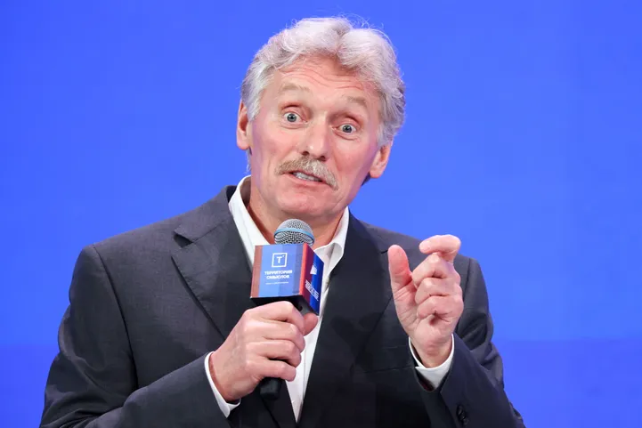

- Tellijana loed uudiseid äpis reklaamivabalt.
- Postimehe ja maakonnalehtede piiramatu lugemisõigus, Kuku raadio saadete järelkuulamine.
- Digiajakirjad Naine, Reis, Lemmik ja Kodu
Venemaa president ja tema kõneisik jätkasid eile meedias pealtnäha nagu lihtsalt arutelusid tuumarelva võimaliku kasutamise teemal. Venemaa presidendi sõnavõtt oli justkui mõtisklus teemal, kas me saame olla kindlad, et tuumarelva mitte kunagi ei kasutada, kirjutab julgeolekuekspert Rainer Saks (Parempoolsed).
Märksõnad